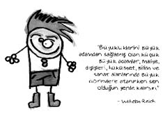

Wilhelm Reich (1897-1957)
Yahudi kökenli varlıklı bir Avusturyalı ailenin çocuğudur. Annesi intihar etmiş, babası ve kardeşi veremden ölmüştür. Freud’un öğrencisi, Eric Fromm’un öğretmenidir. Cinsel özgürlüğün bulunmadığı uygarlık toplumunda insanoğlunun büyük bir stres içerisinde yaşayacağını savunur. Tam bir orgazm yetisine kavuşmanın ruh sağlığının temeli olduğunu söyler. Kabaca özetlersek, ikiz yatağı olan ailenin bireyleri mutludur. Orgazm, vücudun duygusal enerji düzenleyicisidir. Hastalıklardan korunmak ve hastaysanız tedavi olmak için bire birdir.
Reich, galaksilerin oluşumunu doğruya en yakın biçimde açıklamış; fırtınaların, kuzey kızıllığının nedenlerini ve gelişimini, maddenin oluşumunu, gezegen yörüngelerinin eğik olma nedenini ve birçok doğa olayını incelemiş; çöllerin nasıl yeşillendirilebileceği üzerinde araştırmalar yapmış; fırtına yapıcı ve engelleyici cihazı icat etmiş; kimyasal maddeler aracılığı ile bulutsuz yağmur yağdırma metodunu bulmuş; işçiler için ruhsal bakımevleri açmıştır.
“Yaşam gücü” kuramının sahibi olan Reich, dünyanın UFO savaş merkezi olduğunu ileri sürer. Bilimsel dolandırıcılık suçundan hakkında dava açılır. Mahkeme, iki yıl hapis yatmasına ve kitaplarının imha edilmesine karar verir. Hapishanedeyken kalp krizinden ölür.

Ne demiş Reich…
• Büyük adam, ne zaman ve hangi alanda küçük adam olduğunu bilir.
• Sen kendi kendini köleliğe mahkûm ediyorsun.
• Senden başka hiç kimse senin kurtarıcın olamaz!
• Kendi deneyimimden, kendimi ve başkalarını incelememden şuna inandım ki; cinsellik, tüm sosyal yaşamın ve keza bireyin iç yaşamının ana noktasıdır.
• Ağaçlar arasında vahşi kediler olduğu için, bir ormana girmekten korkmamalıyız.
• İnsan mı olacağız yoksa koyun mu kalacağız?
• Asıl açıklanması gereken, neden aç insanın çaldığı ya da sömürülen adamın grev yaptığı değil, neden aç insanların çoğunun çalmadığı ve sömürülenlerin çoğunun greve gitmediğidir.